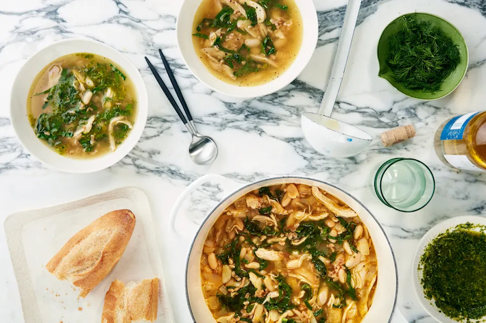

Chicken Soup

A cozy and lemony chicken soup with farro,
white beans, and kale.
By adding kale, white beans, farro, and lots of
lemon, this recipe brings new life to store-bought
chicken broth. Prep time is about 1 hour and 10
minutes alltogether. Serves 4.
- 3 tablespoons olive oil, divided
- 2 large carrots (about 10 ounces), coarsely
chopped
- 2 onions, coarsely chopped, divided
- 12 garlic cloves, thinly sliced, divided
- 1 leftover roasted chicken carcass
or 1 1/2 cups shredded cooked chicken
- 10 cups low-sodium chicken broth
- 1 1/2 cups whole farro
- 2 1/2 teaspoons kosher salt, divided
- 1 (15-ounce) can cannellini beans, drained,
rinsed
- 1 cup thinly sliced Tuscan kale
- 2 tablespoons fresh lemon juice
- 1/8 teaspoon freshly ground black pepper
- 1/4 cup coarsely chopped dill
- 1 baguette, sliced, toasted
- Lemon wedges (for serving)
- Heat 2 Tbsp. oil in a large pot over
medium-high. Cook carrots, half of the
onion, and 3 sliced garlic cloves,
stirring occasionally, until softened and
lightly browned, about 5 minutes. Add chicken
carcass, if using, and broth; cover and simmer
30 minutes. (If you're not using carcass,
simmer 15 minutes.)
- Meanwhile, toast farro in another large pot over
medium heat, stirring occasionally, until it
starts to brown and smells nutty, about 3
minutes. Stir in 1 tsp. salt and 3 cups water.
Cover and simmer until farro is tender and
liquid evaporates, about 30 minutes; strain
any remaining liquid, if necessary. Set
aside 2 cups farro for another use.
- Strain chicken broth mixture through a fine-mesh
sieve into a large bowl; discard carcass and
vegetables. Set aside 2 cups broth for
another use.
- Wipe out pot, then heat remaining 1 Tbsp. oil
over low. Cook remaining onion and 9 sliced
garlic cloves, stirring occasionally, until
tender and light golden, 8 to 10 minutes. Add
remaining broth left in bowl, increase heat
to medium-high, and bring to a simmer. Add
reserved chicken meat, beans, kale, lemon
juice, pepper, and remaining 1 1/2 tsp. salt
and farro left in pot; cook until vegetables
are cooked through, 3 to 5 minutes.
- Divide soup among bowls. Stir 1 Tbsp.
salsa verde into each bowl, if using,
and sprinkle with dill. Serve with
baguette slices and lemon wedges alongside.